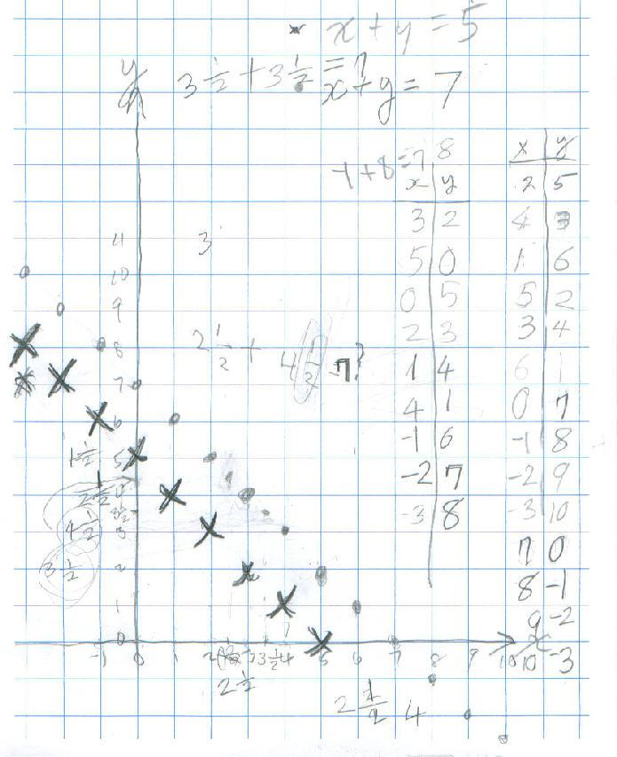
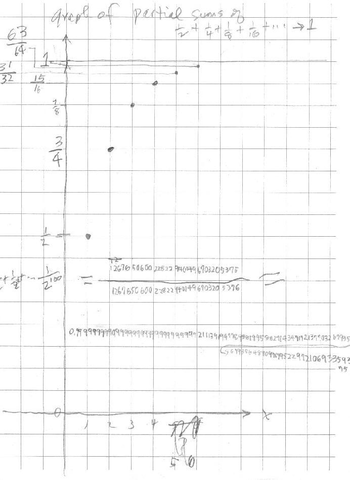
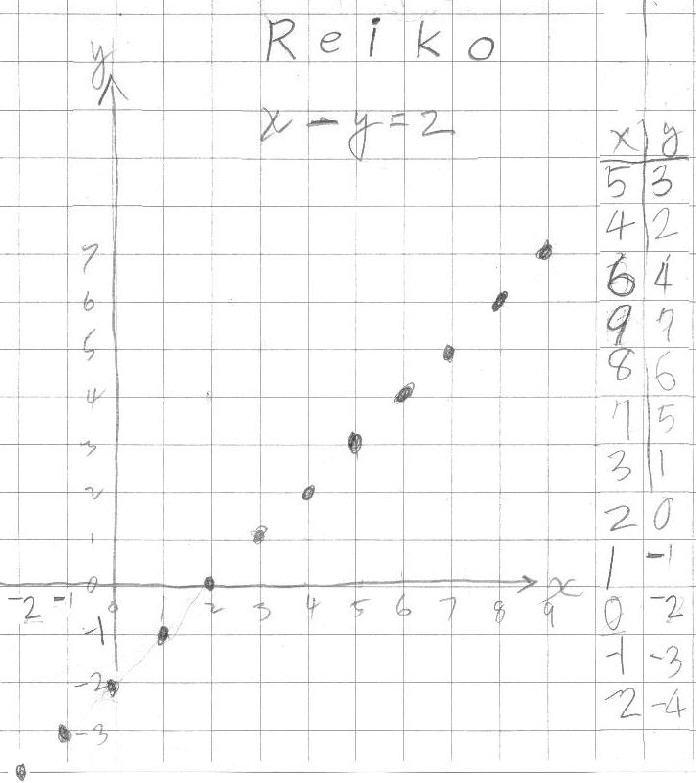
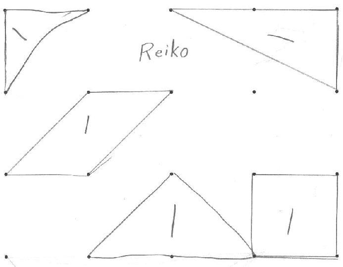
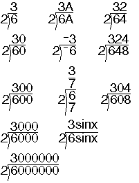
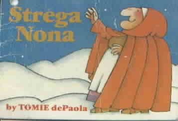
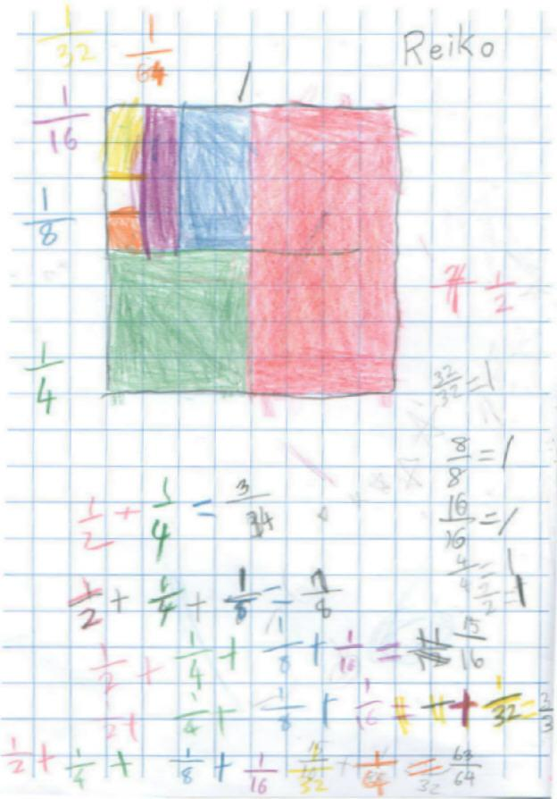

Toshio, age 9 & Reiko, just 8, worked with Don for 6 days
Day 1: Sunday July 29, 2001:
Some background: Toshio
& Reiko's parents spent about an hour
talking with Don about how he came to this point in his life. They had purchased
his Japanese books, CD-Rom and all his materials in English, while in Japan.
They read his books over and over. They came to the US in September and are here
for 2 years while Dad is working in NM. They thought enough of Don's material
and his way of teaching, that they wanted Toshio, a bright young man of 9, to
work with him. Don thought just Toshio would be coming with his Dad to
Champaign. It turned out that the whole family came. Reiko is a bright young
lady, just 8. Working with Toshio for 2 minutes, and realizing that Reiko was
doing some things along with him, Don and their parents decided that Don should
also work with Reiko. Mom was needed to translate quite a bit and she did a
marvelous job, throughout the week.
After a couple of cases, Don saw that Toshio
knew what squaring a number meant, and he knew that 4 - 5 = -1. Don
knew that Toshio could solve a quadratic equation by guessing. Don had him give
a small number to try... see solving
quadratic equations in ch. 8. After the first 2 equations, Toshio realised
the secrets, and successfully solved the following:
x2 - 5x + 6 = 0 {
, }
x2 - 7x + 10 = 0 { , }
x2 - 9x + 14 = 0 { , }
x2 - 10x + 24 = 0 {
, }
x2 - 11x + 24 = 0
{ , }
x2
- 25x + 24 = 0 { , } and
x2 - 6 1/2 x + 9 = 0
{ , }
There was much discussion of what patterns he saw with the 2 answers and the numbers in the equation, what numbers multiply to give 24, and adding 2 numbers to get 6 1/2. Then Don asked Toshio to make up a problem for Don and his Mom. He did this well, and his Mom got the answers to her equation quickly!
Toshio worked on the Shuttle Puzzle, which he found difficult (not unusual). As Don worked with Toshio and Reiko, he would describe for Mom and Dad what he was trying to do and the features of how he did it. For example, when Toshio was having trouble with 4 pairs of pegs on the Shuttle Puzzle, the hard problem, Don suggested he start with 1 pair, an easier problem, then work up to the harder problem.
Toshio put the 3D Multiplication stack in order and Toshio & Mom found patterns on it. Don showed both Toshio and Reiko how to play the The Magic Number game.
Reiko also worked on the Tower Puzzle and the Magic Number Game.
Toshio worked on the infinite series 1/2 + 1/4 + 1/8 + 1/16 + 1/32 + 1/32 + 1/64 + ... by coloring in the square (ch.1). He found the partial sums. They talked about if these partial sums were increasing, decreasing or staying the same and what was happening.
Toshio worked on the Shuttle Puzzle and made a table of number pairs, x - being the number of pairs of pegs and y-being the number of moves to interchange them. He figured out that the y-numbers were going up by 2. And Don asked him to think about the number of moves it would take to interchange 100 pairs of pegs! In other words, find a rule to get from x to y, without having to go up to the 99th y-number.
Toshio and Reiko each made a set of the 5 cards for the Magic Number Game to take back to NM with them. They also each made a set of the Soma cube pieces by gluing the 1 cm3 blocks together. Reiko also glued others together to make other shapes, not part of the Soma set.
Don had Reiko make a graph of x + y = 7 (she was still 7 at that time). After talking about negative numbers on the number line, Reiko found the point (8, -1) by Don's directions to follow "the yellow brick road", and she understood that 8 + -1 = 7. Don talked to Mom about "The Wizard of Oz" movie which they had seen, and his reference to "the yellow brick road". Don had Reiko make a graph of x + y = 5 on the same graph paper:

Everyday they each took something back to the hotel to work on. This day they
took the Tower Puzzle and the Shuttle Puzzle.
Day 3: Tuesday July 31, 2001:
Toshio graphed the partial sums of the
infinite series 1/2, 3/4, 7/8, 15/16,...

Don used Derive5 with Toshio to take the sum out to100 terms, 1/2 + 1/22 + 1/23 + 1/24 + 1/25 +.. + 1/2100 . Notice Toshio copied the answer as a fraction and as a decimal. Don and Toshio talked about the fraction, and the patterns. He said the top number was 1 less than the bottom number, just like the ones he had figured out. And the decimal showed that the number was VERY, VERY close to 1 as showed up on his graph above. They agreed the sum goes to 1.
Both Toshio and Reiko showed a lot of the persistence with everything they did. They worked very hard and always asked for more.
Toshio also worked on exponents and negative exponents with bases 2, 5, and 10. He ended up solving equations like 103 X 10x = 107 . And he worked on the metal puzzles.
Reiko graphed x - y = 2:

Reiko and her Mom had a long discussion about 1 - -1= 2. When Don
came over to join in, he first showed them that the point (1, -1)
indeed was on "the yellow brick road", so 1 - -1 = 2. Then
he showed on a number line, if you have 1-1 you go down 1 from 1 to get to 0. If
you want 1 - -1 you have to change direction and start at 1 and go
back up 1 to get to 2. Then Don showed Reiko and Mom this pattern:
In the examples below, the 1 stays the same, and as the second
number goes down 1, the answer goes up1
1 - 3 = -2
1 - 2 = -1
1 - 0 = 1 so
1 - -1= 2
Reiko did something I had never seen a 7 year old do, she changed the signs from 1 - -1 = 2 to 1 + +1 = 2. WOW! Then the others were just as simple to her.
Don saw on Mom's paper 1 - (-1) = 2. They talked about the raised sign of the negative numbers like -1, and how it makes writing sentences simpler. Even in today's math texts you can find 1 - (-1) = 2; if one wrote it 1 - -1 = 2, there is no need for the parentheses and it is much simpler. Reiko had the identity that if you subtract a number, just add its opposite. A - B = A + -B. If B = -1, the opposite of -1 is +1.
Don put a point on her graph x + y = 7 in-between two points, like (2 1/2, 4 1/2). She found the two numbers and added them to check if these points worked, like 2 1/2 + 4 1/2 = 7, and they did!
Don gave Reiko multiplications like 2x3= 6 she knew, then 2x30= , 2x300 = , 2x3000= , 2x3000000 = , 2x3A = , 2x 3/7 = , 2x 3 sin x = , 2x -3 = . After she did these all correctly, the first time, he asked her to make up some like these. The first one she made up was 500000000x 1 1/2= 700000000 1/2 she wrote. Don thought that was very good and he understood it, but showed Reiko it should be written 7 1/2 00000000 (7 1/2 hundred million). Later Don thought he should also have written this as 700000000+ 1/200000000 = 700000000 + 50000000 = 750000000. But he never got that to Reiko.
About this time, Don showed Reiko how to scan her pictures. She was then able to do that quite easily and enjoyed doing it!
Reiko worked on the geoboard. After showing her what 1 can of paint covered, or in other words, what an area of 1 looked like (within the square below), she made other shapes and found the area within them. These had an area of 1 (except for the 1/2 in the upper left corner below).
.
Then Don asked her about the area of these triangles below (with a base of 1 and height 2). After some discussion of different ways to get the area, she found these all had an area of 1:
Don had the bubble water out for his students this day (see math from Bubbles). They looked at the bubbles made in cube and tetrahedron. Later Toshio started making the cube using wire and pliers. He finished it on Thursday.
Don had Toshio graph 2x + 3 = y, and look for patterns. He could predict where new points would go, what the change to 5x + 3 =y would look like and how it would be different from the graph of 2x + 3 = y. Then Don had him find the equations for 3 graphs Don made. They talked about the slope of the graph and the adding number as where it crossed the y-axis.
Toshio started the infinite series 1/3 + 1/9 + 1/27 + .. + 1/243... and they talked about what simple fraction 40/81 was close to. This carried over to Thursday. Mom asked about drawing the picture using the triangle. Don tends to let them color in the squares the way they can understand it best. Don will try to have some youngsters do it this way!
Reiko shared 5 cookies between 3 people and each person got 1 2/3 (She cut the 2 cookies that were left into thirds, and each person got 2/3). Then Don gave her a different pair of scissors and told her she had to do the same problem, but the scissors were special, they only cut into 2 equal pieces. She then shared the 5 cookies between 3 people and each person got 1 + 1/2 + 0/4 + 1/8 + 0/16 + 1/32 + 0/64 + 1/128 + 0/256 + 1/512 + 0/1024 + 1/2048 + 0/4096 + ... and this infinite series equals 1 2/3. Of course Reiko saw the patterns to get the bottom numbers, as adding the same number; to get the tops, just alternate 1,0,1,0,1,0,... So 1 2/3 = 1 + 1/2 + 0/4 + 1/8 + 0/16 + 1/32 + 0/64 + 1/128 + 0/256 + 1/512 + 0/1024 + 1/2048 + 0/4096 + ...
Don had Reiko do division problems, how many 2's make 6? count by 2's .....2,4,6, oh, 3.. Don wrote them going down and Reiko answered them.

After Don helped with the second one, Reiko was able to do these correctly by herself, with only how many 2's in 64 a slight problem.
Toshio, Reiko and Mom watched the video "Strega Nona" upstairs. Reiko found the Strega Nona doll that Mrs. Cohen had there. This video was made by Weston Woods Studios, animated in Hungary. Don let them borrow 5 tapes: "Strega Nona" +, "Really Rosie" by Maurice Sendak , "Homer Price" ("The Doughnut Machine" +), and "What's Under My Bed?" ("The Three Robbers"+). These were tapes Don took to his grandchildren's Montessori Pre-School for their birthdays. He also let Mom borrow a PBS tape of Nobel prize-winning physicist Richard Feynman's career and death. They took these home. Don had described to Mom, Feynman's lecture about making a theory...he said the first thing one needs to do is GUESS what it should be. His students giggled at this, but this was very important he said. Then one had to test out the theory, do some experiments, and if it didn't work throw it away! So when Don has his students guessing to solve equations, he feels confident that he is going in the right direction.
Don had Toshio start the graph of the partial sums of the infinite series 1/3 + 1/9 + 1/27 + 1/81 + .., and it was left for him to finish it when he returned home. He spent a lot of time finishing the wire cube that he was going to use in the bubble water.
Reiko worked on the infinite series below:

Reiko made an M.C. Escher Kaleidocycle, with Don's help.
At dinner that night Don played "Sprouts" with Toshio and Reiko.
Day 6: Friday August 3, 2001:
After a breakfast birthday party for Reiko at Don's house, Reiko, Toshio and Mom opened presents. Then they went downstairs to work on math. Don worked with both of them, on multiplying numbers like 12x13 in their head using squares and strips. Before the session was over, Toshio was multiplying 22x23 in his head!
This was a very exciting 6 days in Don's life. Despite the language differences, Mom did such a fine job of translating, that Don found he was working with these children as if they spoke English, just as if he was working with the other, local children that were there most of the sessions. Reiko and Toshio's Mom wrote these words: "..Toshio and Reiko will treasure their wonderful experiences with Don..These six days have flown by. They say that they would like to come back to you again if they have a chance. I'm very happy to hear that..."
Don's favorite Japanese word was "wakata?" which means "do you understand?". Now he has added that to "comprende?" and "capiece?" in Spanish and Italian, that he uses.